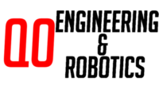
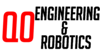

Ryan Gniadek

This is my website where you can see more information about me, check out my projects, ventures, courses, and more.
I am a student at the Virginia Tech College of Engineering, working towards a Bachelor of Science degree in Computer Science. I am looking for opportunities in software engineering and development and data science, especially in transportation or financial applications.
Academically, I am interested in software engineering, distributed computing, and operating systems. I also work at Leidos Transportation Solutions as a Software Engineer Intern and am working on research into the performance of space-based machine learning algorithms at Virginia Tech.
Additionally, I serve as a coach and mentor to the Engineering and Robotics Club at Quince Orchard High School, providing guidance to the team in the areas of club administration, software design, and electronics.
 
